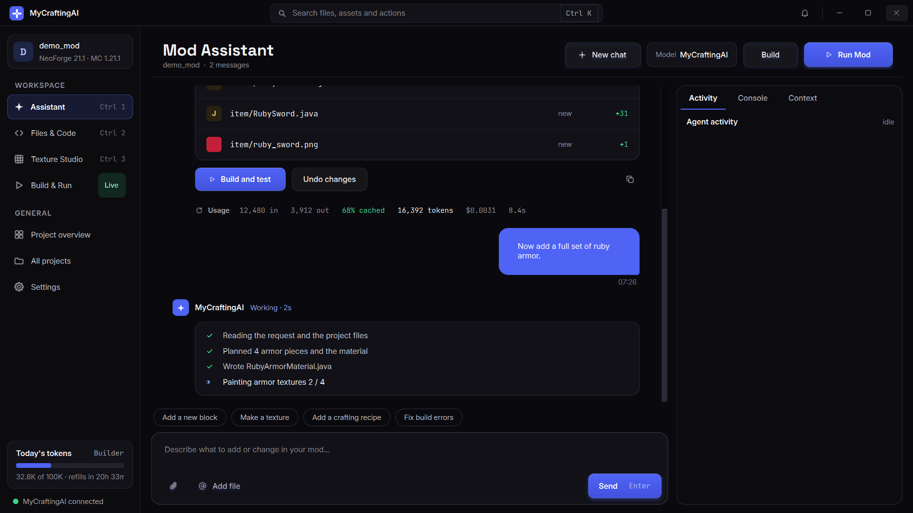

Describe the mod.
Play it tonight.
Type what you want in plain English. MyCraftingAI writes the Java, paints the textures and starts Minecraft with your mod already loaded.
You ask once. It plans, writes, paints and checks.
Pick a request. This is the order the assistant works in on a real project: read the code that's there, change only what it needs to, then compile and boot the game to prove it works.
Four workspaces, one project.
Screens straight from the desktop app. Everything works on files in your own project folder, so you can open them in any editor too.

From an empty folder to a running mod.
Create a project
Pick NeoForge, Forge or Fabric and a Minecraft version. The official template is downloaded and renamed to your mod, so your package is com.my_first_mod, not com.example.
Say what you want
"A ruby ore between Y -16 and 32 that drops 1-2 rubies." The assistant reads your existing code first, then writes only what's needed.
Run it
Press Run Mod. It compiles, fixes its own build errors as many times as you allow, and opens Minecraft with your mod loaded.
How many tokens do you actually need?
Every plan comes with a daily allowance that resets at 00:00 UTC. Move the sliders to see which one fits the way you work.
Estimates from typical requests in our own test projects. Your numbers depend on how big your mod gets.
Start free. Upgrade when you outgrow it.
Monthly plans. Cancel any time. Your projects and files are yours on every plan.
Prices in USD. Taxes may apply depending on where you live. Cancel any time from your account page - your plan runs to the end of the paid month. Payments are non-refundable (Terms).